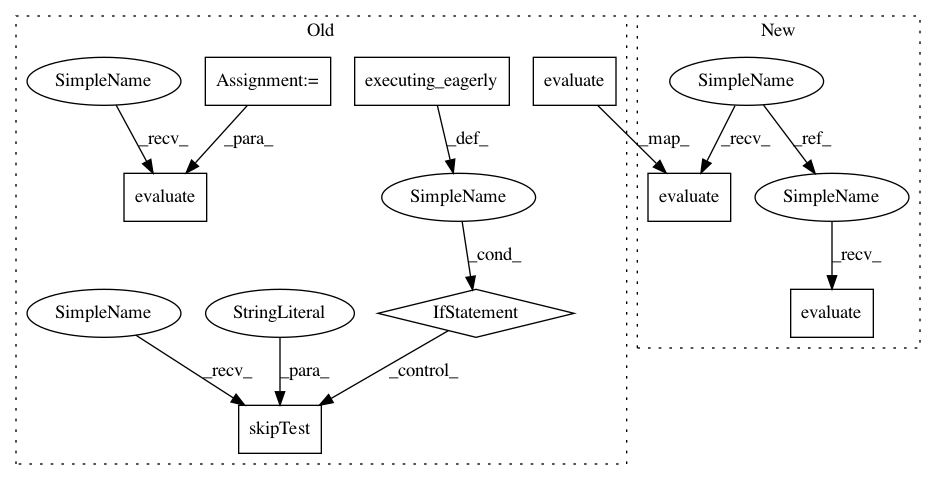

c611d9b6b35e44326bc18096dc57abe18eb6c90b,tf_agents/replay_buffers/tf_uniform_replay_buffer_test.py,TFUniformReplayBufferTest,testGatherAll,#TFUniformReplayBufferTest#Any#,279
Before Change
("BatchSizeFive", 5),
)
def testGatherAll(self, batch_size):
if tf.executing_eagerly():
self.skipTest("b/123883577")
spec = specs.TensorSpec([], tf.int32, "action")
replay_buffer = tf_uniform_replay_buffer.TFUniformReplayBuffer(
spec, batch_size=batch_size)
action_variables = [
tf.Variable(i).count_up_to(i + 10) for i in range(0, batch_size)
]
actions = tf.stack(action_variables)
add_op = replay_buffer.add_batch(actions)
items = replay_buffer.gather_all()
expected = [list(range(i, i + 10)) for i in range(0, batch_size)]
self.evaluate(tf.compat.v1.global_variables_initializer())
for _ in range(10):
self.evaluate(add_op)
items_ = self.evaluate(items)
self.assertAllClose(expected, items_)
@parameterized.named_parameters(
After Change
("BatchSizeOne", 1),
("BatchSizeFive", 5),
)
def testGatherAll(self, batch_size):
spec = specs.TensorSpec([], tf.int64, "action")
replay_buffer = tf_uniform_replay_buffer.TFUniformReplayBuffer(
spec, batch_size=batch_size)
@common.function(autograph=True)
def add_data():
for i in tf.range(10, dtype=tf.int64):
batch = tf.range(i, i + batch_size, 1, dtype=tf.int64)
replay_buffer.add_batch(batch)
self.evaluate(tf.compat.v1.global_variables_initializer())
self.evaluate(add_data())
items = replay_buffer.gather_all()
expected = [list(range(i, i + 10)) for i in range(0, batch_size)]
In pattern: SUPERPATTERN
Frequency: 3
Non-data size: 8
Instances
Project Name: tensorflow/agents
Commit Name: c611d9b6b35e44326bc18096dc57abe18eb6c90b
Time: 2019-02-27
Author: oars@google.com
File Name: tf_agents/replay_buffers/tf_uniform_replay_buffer_test.py
Class Name: TFUniformReplayBufferTest
Method Name: testGatherAll
Project Name: tensorflow/agents
Commit Name: c611d9b6b35e44326bc18096dc57abe18eb6c90b
Time: 2019-02-27
Author: oars@google.com
File Name: tf_agents/replay_buffers/tf_uniform_replay_buffer_test.py
Class Name: TFUniformReplayBufferTest
Method Name: testGatherAll
Project Name: tensorflow/agents
Commit Name: c611d9b6b35e44326bc18096dc57abe18eb6c90b
Time: 2019-02-27
Author: oars@google.com
File Name: tf_agents/replay_buffers/tf_uniform_replay_buffer_test.py
Class Name: TFUniformReplayBufferTest
Method Name: testClear
Project Name: tensorflow/agents
Commit Name: e67f7a67d2c455faf468fa2d2705a7de052e4b36
Time: 2019-02-25
Author: sguada@google.com
File Name: tf_agents/environments/tf_environment_test.py
Class Name: TFEnvironmentTest
Method Name: testMultipleReset